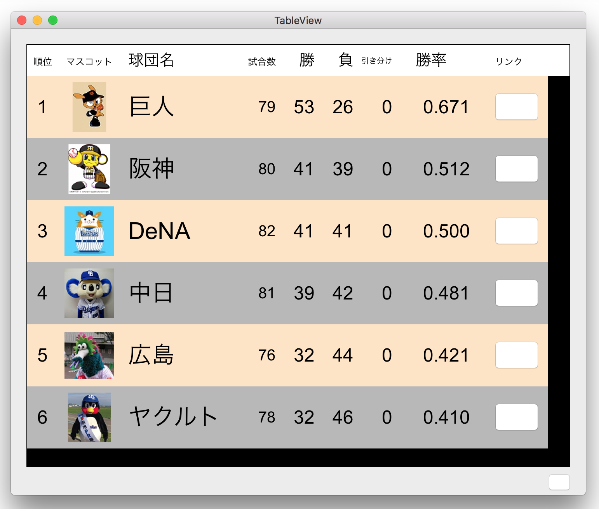

View Based テーブルビュー・データを更新する
動画はこちら
Topics
テーブルビューのプロパティの設定をプログラムからできるだけ行ってみる
ただし、スクロールビューの大きさ (ScrollView size)と列数 (TableView Columns)はインタフェースビルダで定義し、残りをプログラムから設定してみる。
また、列(TableColumn）とセルビュー（TableCellView）のIdetifier名、テキストフィールドのEditable属性はプログラムでの設定が反映されなかったのでインタフェースビルダで定義した。
次のプロパティは NSTableViewオブジェクトの初期化で設定した。
次のプロパティは NStableViewDelegateメソッドから設定した。
テキストフィールドからフォーカスが外れたときテーブルビューの再表示を行う。
controlTextDidEndEditing(_:)メソッドは OS10.12では未サポートなので（10.14+ available）、自前のプロトコルを宣言し、テキストフィールドの textDidEndEditing(_:)メソッドからAppDelegateに実装したテーブルビューのreloadDataメソッドを呼ぶ。
クラス一覧
UATableView 列見出しの編集
UATableHeaderCell 列見出しの編集
UATextField セルの編集：属性付き文字列
UAIconView セルの編集：画像イメージ
UAButton カスタムボタン
UAUtility ユーティリティ・メソッド
UATeam チーム成績